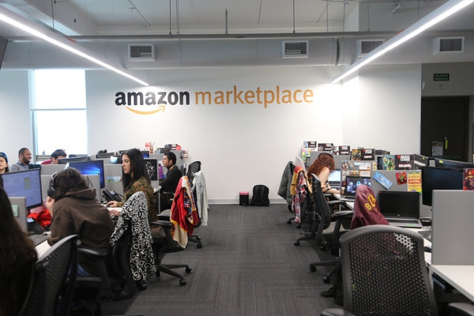

Physical borders are not the only barriers that separate people in Costa Rica. In this increasingly globalized world, due to the advent of technology, digital borders have become commonplace as well. Over the past few years, call centers have been popping up at alarming numbers in San José. Promising job security and stability in a country facing an employment crisis, they have become very popular with the Costa Rican youth. However, as I have come to learn from multiple accounts, they are not as great as they would like you to believe.
A digital border
Jorge is a call center worker in the capital city of San José. He has a bachelor’s and master’s degree in Computer Science, and comes from a middle class family. While he considers himself lucky for the opportunities he has had in life, he tells me that he is not reaching his full potential. Being university educated in computer science, he had hoped that he would be able to use his skills and knowledge to contribute to the development of Costa Rica, but software engineering jobs are quite scarce in the country. According to Jorge, there is an oversupply of computer science graduates in Costa Rica, and beyond leaving the country and finding opportunities elsewhere, new graduates such as himself end up underemployed and working in fields where their knowledge is not necessary. He had hoped that completing a master’s degree could give him the edge he needed to get hired, but this was not the case.
Being also well versed in the English language, he was finally able to get a job at a call center taking customer service calls from customers of American companies. However, even with his language skills, working conditions are rough and the pay is subpar. The hours are long, and the office does not provide much comfort. The managers are taskmasters and attempt to ensure that every second at the company is being used to provide value to the company’s benefactors and making money for a corporate entity - the workers are being milked dry. As Jorge states:
“Rather than a job where my unique skills could be valued, I am reminded constantly by the company management that by all measures I am unremarkable and easily replaced at any time. Furthering that, they see it as motivation for me to work even harder to keep my job. The attitudes of the customers do not help, and likely exasperate the belittlement that us workers face from management. When there are issues with the parent company that I am not in control of, or the need to access information or functions that our company has simply not provided or relayed to us, racial insults and discrimination are often fallbacks.”
Additionally, customers are also often a problem. Jorge mentions he is often disparaged for his English abilities, and customers say they would rather “speak to an American” at the first opportunity. This dismissive attitude is not lost on the management, and both compound together to create a hostile work environment. According to Jorge, customers dismiss the value they provide, leading management to further neglect and regard them with disposability, reducing the resources and training provided to them, and thus affecting the quality and effectiveness of the work they can deliver. However, Jorge is convinced that such attitudes and conditions cannot solely be blamed on the individuals that he has interacted with. He mentions that if he were working in the US, not only would he potentially find a job that would better be suited to the skills he worked so hard to acquire, but he would also be treated with far less dismissal. It is interesting to see that even as hard borders fall away through our modern forms of communication such as the internet and cell phones, they continue to cast a long shadow over our interactions with each other and our lives.
After all, when Jorge is at work, he is not serving his community, nor providing assistance to the people he knows. Instead he is facilitating the functions and economy of a foreign land, and by all means contributing to the betterment of livelihoods there. However because of the borders that divide us, he is shut out of the rewards of such work. Even in the non-physical world, a digital border affects the perceptions and interactions he has with individuals on the other side. While the circumstances that divide Costa Rica from the US are numerous and challenging to connect, one would have hoped that through a medium where the distances feel so much shorter that the impact of borders between peoples would be diminished. It is instead evident that the lines we use to divide peoples stretch beyond any map, into the physical world, and into the digital one.
